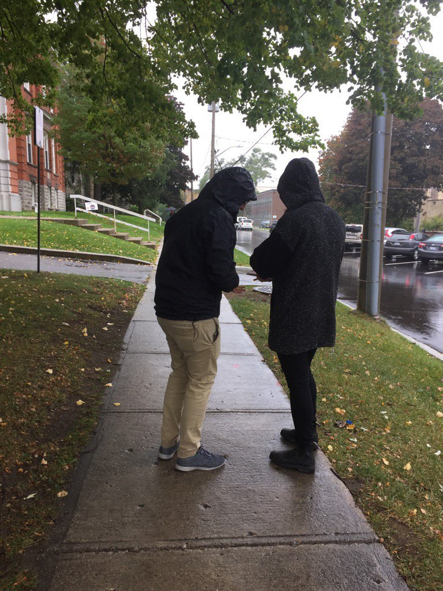
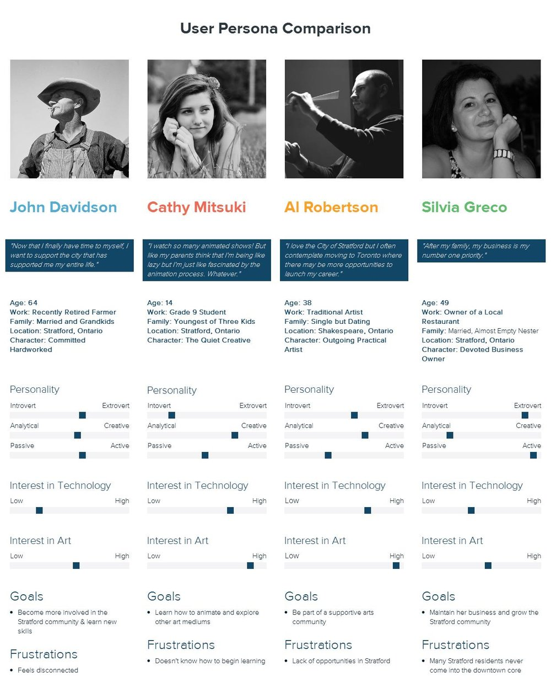
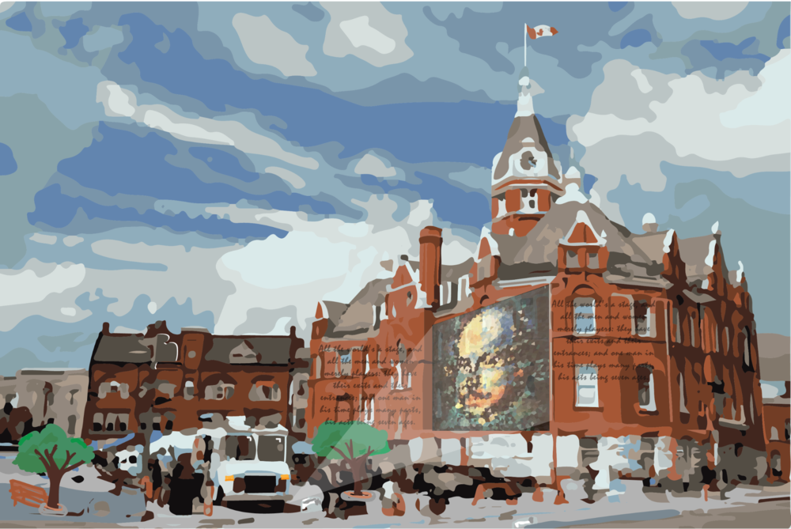
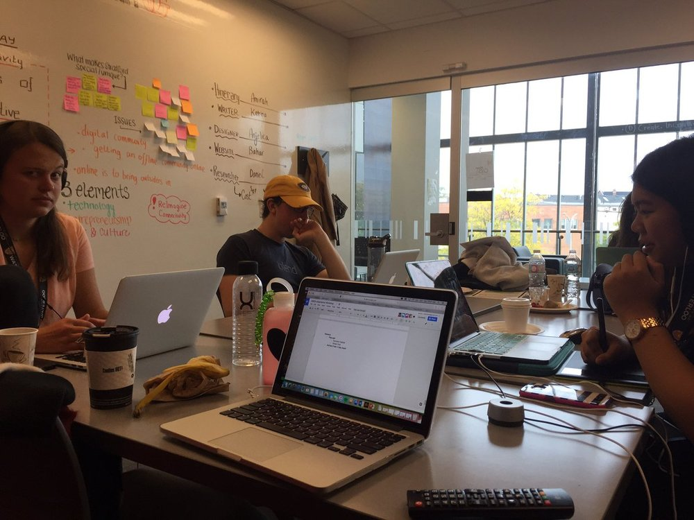
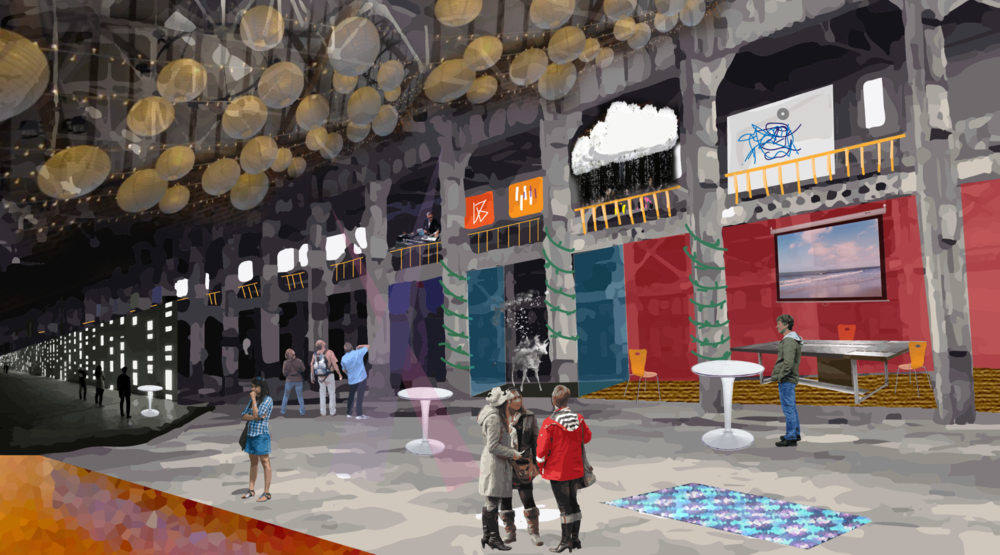
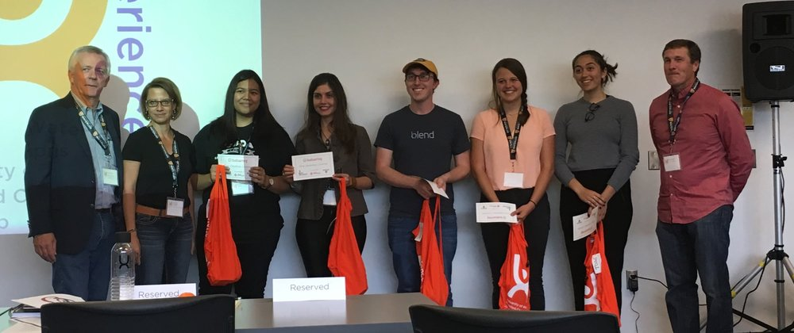

In October of 2016, I participated in a Hackathon called uXperience Design Camp 2016 at the University of Waterloo Stratford Campus. The goal of this Design Camp was to provide students with an immersive hands-on design experience. It brought together 100 aspiring designers for a weekend of exploration, collaboration, and design.
The Situation
"Stratford possesses a unique location and attributes. It's a small community, situated between two major regional economies, London and Waterloo (ON, Canada). Yet it has achieved a significant level of global recognition and status, something unique for a city of 30,000 people. Stratford is evolving to a community which is increasingly dependent on the creative class - combining the elements of - technology; entrepreneurship; and arts and culture. Stratford is also at a crossroad. To be more prosperous, it needs to be better connected. It needs to create a more robust relationship and a higher profile with global business sectors. Stratford lies immediately adjacent to the Toronto-Waterloo Technology Corridor, often referred to as Silicon Valley North."
The Problem
The Deliverables
"Create/ design a proof of concept that solves the problem. The solution should consider:
- Help the City of Stratford re-imagine connectivity in a way that is citizen-centric and easy to use for both city staff and residents
- Design for the overall demographics of the city of Stratford
- The proposed solution should not only solve the problem but must have the potential for commercialization and be capable of being replicated in cities offering similar services"
Step One: Research
At this point, my team got together and I offered that we should split into two groups. Both research but different types of research. One group to do research on the town and another group to do interviews of residents. I knew this was important from the design thinking workshops I did at SAP. Two people stayed at the campus and three went out onto the streets. Since it was raining that day we were one of the only teams to go outside. We decided to go into businesses and interview the employees who are also residents of the town.
We went around to around 10 business and interviewed about 30 people. After completing the interviews we learned some key things.
We asked people:
what their daily lives looked like?
What their favourite parts of Stratford were?
What they commonly suggested tourists do during their visit to Stratford?
What trends do they find amongst locals and tourists?
How they spend their free time?
How do they connect to the city offline and online?
I made sure that our interviews were story guided and really elicited a response. We didn't want to give them the answers or push them into a certain direction. We wanted the most truthful answers possible.
Some of the answers that we received were that older people either don't have or don't use phones/ social media. Sometimes tourists come to the library to use their computers or the internet. We knew going into this that much of the city is retired and older and that part of the population hasn't changed in the last fifty years. We also noticed that most people have more of a lack of knowledge or a simple distaste towards technology as the reason that they do not use it. This was the most important piece of information that we extracted.
Step Two: Persona's
We decided that the next step was to develop persona's; of which we made four. Each persona covers the whole spectrum of people in the city which allowed us to better generate ideas for this challenge. We realized that it isn't easy to build something for an entire city and it is especially difficult to build something technological for an entire city that does not use much technology.
Step Three: Ideate
The next step was ideating. We began this process by reading out the comments we got from residents and making sticky notes (this was something I practiced in my Design Thinking workshops). Using those notes we made groups and brainstormed on the ideas. After several hours of brainstorming and changing ideas, we finally had something we thought would work for the city. We started with a very broad plan and after getting some recommendations from the mentors we whittled this plan down.
At this point we realized that we had the decision to make, we could either go the "easier digital route" and develop an app or a website - this had an innate problem as we knew that older people wouldn't use this. Or we could go the more "challenging real route" for fixing the connectivity challenges between tech and non-tech and between the older generation and the younger generation. I knew that there was no way to make something effective if it was going to cut out a large chunk of the population. I pushed hard for the "real route." We ended up deciding on the "real route." The reasoning behind this being more challenging is that we are tasked with creating a user experience. Something we believe is harder to do in real life than in the digital realm.
We then had mentor sessions were we presented our idea to some people in the city and people in design. We got many recommendations on it and the most important one was to focus on what we can do now, what we can do small rather than big. The team and I realized that the city had a big hurdle to overcome. Not enough people were using technology. This made us realize that creating an exclusively digital solution would not help anyone. We could have designed an app. Every other team did. Some designed apps that helped people to use the "future self-driving cars" others designed messaging platforms. But what is the innate point of these apps? They wouldn't be effective. No one in Stratford would use them. This problem had to be approached in a completely different way. In a way, that was natural for the citizens and would help to overcome this hurdle.
In a city of 30,000 people, half are above the age of 50. This is almost 10% higher than Canada's average of 40% above 50. There was also an aspect of rurality to consider as Stratford is oddly situated as a rural tourist town. Comparably in the U.S. about 50% of people who live in rural areas use cell phones.
Our secondary research also yielded the idea that people in Stratford are against change. Something that would contribute highly when trying to integrate more technology. We also knew that Stratford has attempted to do things like free city wifi, and being the first city in Canada to agree to self-driving vehicles. Both of these initiatives have failed to reach saturation.
All of this information led us to using User Experience Design to redesign the way that we bring technology to Stratford. We wanted to make it easy for the residents to get to know technology. We knew this wouldn't be easy.
From this, we were able to truly integrate UX into our design. We built an experience. We created a four-step, 10-year plan that the city could implement immediately to bring technology to the city of Stratford.
This plan is called Art-Tech. It is where Art and Technology meet. It is in this space where the beauty of technology is revealed as traditional artists delve into the new ways that technology can be incorporated into their artistic visions.
This plan supports artists in linking their creative visions to new technologies. As communities of creators grow, it lays the foundation to attract business interested in innovating in the art-tech space.
We focused on creating events. These events happen at City events that are already popular. This begins our process in an environment that is familiar to the Stratford community. This helped to lay the groundwork and skeleton for the city.
We also designed this in mind with Key Performance Indicators. Before each event, we believe that KPI's need to be established to ensure that the events are being received in the right ways by the community. The plan has room in it for prototyping and surveying. We believe that after each step in the plan the team that is leading it should survey residents and prototype ways to improve the next step of the plan. This is important because of the length of the plan. A lot can change in 10 years.
At this point, it was getting to the end of the first day and we were exhausted. I tried to motivate our team to keep going and figuring out how to show this to the judges and what our idea would look like. The campus closed at 11:59 pm and we had to leave. Some team members went home, but I and two others stayed at a friend's house for a couple more hours to create a plan for the next day. This way we could come back somewhat rested and go forward.
In the morning we decided the best way to present this was to create a toolkit. One that we could give to the city and they could implement tomorrow (which was part of the original question). We also wanted a digital aspect so we created a website that covers all of the information in our toolkit. A summary of the toolkit is below.
Phase Zero - Pop-up Events
This event features an interactive piece of art-technology. At the booth, there would also be an individual to give background on the piece and the future of the Art-Tech Movement. The idea is to mimic the traditional onboarding process by keeping residents an integral part of the creation of this movement. The goal is that this experience is meant to introduce the Stratford Community to how art and technology intersect to create interesting new pieces by actively involving community members and local artists.
We are planning to have this event at Winterfest (a local winter festival - this is specific as tourists do not go to this event), as part of the regular programming, to ensure that we are able to attract many people and to make sure that people are comfortable with this new attraction.
If the first pop-up goes smoothly, we hope to bring more pop-ups to other "stable" events. A huge factor behind this is cost as it is extremely cheap to tack onto an event.
Phase One - Three Day Art-Tech Festival
The event would be two-fold and would be at least a year after the first event. It would have an Exhibition where pieces of Art-Tech will be exhibited. These pieces will be an extension of the local pop-up events. The second part would be Workshops. These workshops are specifically designed for individuals of all ages and abilities to begin to experiment with art and technology. Through the workshops, we hope to bring groups from across generations and from multiple skill sets together. We hope this can bring everyone together to create together from the local community.
This event will hopefully begin to attract individuals interested in the larger art-tech community. Not only will they have a chance to exhibit but they will have a chance to explore works from others within their fields - and this would include people from outside of Stratford (Silicon Valley North Belt people).
Phase Two - Community Incubators
These would be workspaces that repurpose current community spaces and create new spaces. We would give companies the ability to support Art-Tech artists, this not only includes having the space to create but also the tools and the resources to excel. In addition, workspaces will serve as classrooms to get the community creating. Our goal is to attract the local Stratford Community with spaces that are meant to give people who are outside of art-tech the tools and the education to learn about technology and incorporate it in their lives. We hope to grow the community of artists in Stratford.
Phase Two - Community Incubators
We want to renovate the Cooper Site (an abandoned train site) and create a large tech space/hub for individuals and corporations to use. We want to create maker spaces where artists can rent out spaces for themselves to be creative, we want to have a large auditorium for events in technology and showcases in art and tech to be shown.
This would create office and collaboration spaces for companies interested in exploring the intersection of art and technology. We want to support artists in creating. We would do this through galleries, exhibitions areas and workshops.
An important feature is that these spaces are Community Oriented. We will complete this by offering mentorship programs which will help to bridge the generational gap, will teach new skill sets and will have School and Family programs.
The toolkit was designed so that Phase Zero could be implemented tomorrow.
Much of our work was theoretical. We designed a concept piece but we created something tangible and visual. Many of the teams at the competition created a digital object, an app or a website. Because of our research and design thinking approach we knew that this would not work. It would cut out a huge chunk of the population of Stratford. This is why we went with a completely different approach. We pushed our minds to the brink and came up with what we believe is a proper user experience for the city.
This approach led us to First Place at the User Experience Design Camp.
